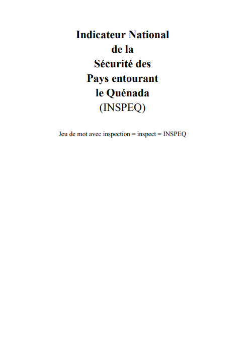
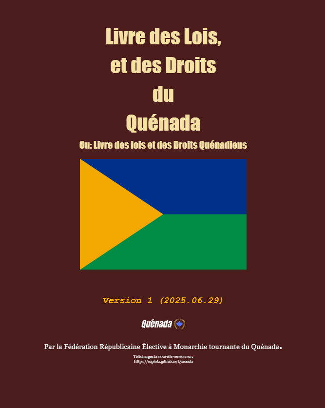

Publication de la version 1 de l'INSPEQ
Publié le 30 Juin 2025 à 17h36

En date du 30 juin 2025, le roi actuel du Quénada, Roman Yara « Le juste » Cacanoir a officielement publier comment noter la sécurité d'un pays.
Il compte aussi ajouter au site officiel du Quénada un bouton pour voir la sécurité des autres pays. INSPEQ est un outil officiel, et peut être utilisé par tout le monde,
mais personne n'est obligé de le télécharger car ils pourront aller sur le site du Quénada. D'après les hackeur Ubum Bubum, le site devrais être https:\\caplotz.github.io\Quenada\inspeq\
même si on pourrait juste tout simplement y acceder en appuyant sur un bouton.
Pages totales: 11 Pages (.PDF)
Publié il y a ...
Publication de la version 1 du LLDQ
Publié le 29 Juin 2025 à 11h39

En date du 29 Juin 2025, la première version du Livre des Lois et des Droits du Quénada a été officiellement publié sur le site officiel du Quénada.
Publiant tout le contenu du début, avec la démocratie.
Pages totales: 150 Pages (.PDF)
Publié il y a ...
Élections
Publié le 10 Septembre 2025 à 11h30
Depuis la révolution de l'an 603 on a une personne qu'on connait tous, Roman Yara « Le juste » Cacanoir,
le Roi actuel élu après la révolution contre Kondor qui marqua la fin de l'Ère de la terreur.
Et bien si je vous disais que les éléctions s'en venait? Et oui!
Les actuels sous-Rois, Kellie Blew « La décoratrice » Boivin et Laurent Kilian « Le philosophe » MacDonald,
devront aussi se dissocier de leurs pouvoirs!
Toutes personnse majeur (En haut de 16 ans) pourront participer a l'élection.
Elle se déroulera sur 35 jours (Du 10 septembre au 15 octobre),
si tout le monde est d'accord. Le temps de l'élection peut se réduire.
Vous pourrez postuler pour être Roi, contactez le Roi actuel.
Vous pourrez postuler pour être Roi, contactez le Roi actuel.
Vous pourrez être le parleur pour honorer votre province! Vous pourrez aussi contactez le roi.
Sinon, vous pourrez tout simplement voter. Il y aura 3 votes, 1 pour le Roi, 1 pour les sous-Rois, 1 pour le représentant de votre reégion.
Vous pouvez vous inscrire pour être Roi, sous-Roi ou parleur jusqu'au 09 septembre.
Pour voter, n'oubliez pas que vous devez être civil officiel du Quénada depuis 1 ans.
01 au 09 septembre: Inscriptions aux élections
10 septembre au 17 septembre: Présentation des sous-Rois
17 septembre au 24 septembre: Vote des sous-Rois
24 septembre au 01 octobre: Présentation des Rois
01 octobre au 08 octobre: Vote des Rois
08 octobre au 11 octobre: Présentation et vote des représentants de région.
Je vous souhaite une bonne chance!
Publié il y a ...